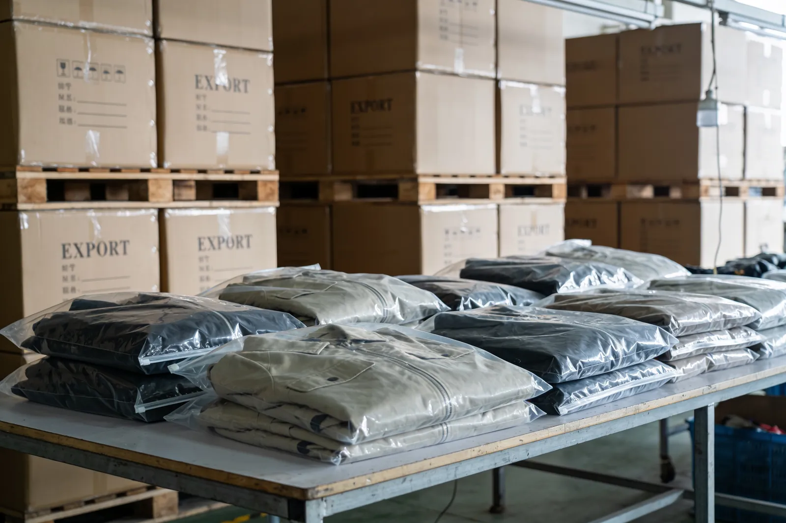

ホーム/提携工場ライン
Line 01 · 提携工場ライン（Partner Factory Line）
アウターとアパレルを、量産の規模で。
中わたジャケットとアウターがこのラインの得意分野で、布帛・ソフト布帛・ニットの衣料も手がけます。生産はバングラデシュの提携工場ネットワークで行い、輸出は Revival Global Ltd が担います。
- 最小ロット
- ご相談ください型ごと・生地により異なります
- 納期
- ご相談くださいサンプル承認後から
- 生産
- バングラデシュの提携工場ネットワーク
- 向いているもの
- アウターやアパレルを、サンプルから量産へ進めたいブランド。
最小ロットと納期は、型・生地・数量によって変わります。ご相談いただければ、お見積りで確定してお伝えします。


このラインでつくるもの
いちばんの得意はアウター。
中わたジャケットやパファージャケット、コートなどのアウターを中心に、布帛・ソフト布帛・ニットの衣料も。
品目
生地の種類
- 布帛
- シャツ地、ツイル、キャンバス、機能性の表地。
- ソフト布帛
- ビスコース、レーヨン、落ち感のある軽い混紡。
- ニット
- トップスやスウェット向けの天竺、フリース、リブ。
運営のしくみ
このラインは、提携先の Greenwear と、バングラデシュにあるその工場ネットワークで動いています。生産管理と輸出は Revival Global Ltd、この窓口は MEGURIWA が担当します。
品質
確かめ方。
品質は「どう確かめるか」でお伝えします。何を期待できるかが分かるように。

